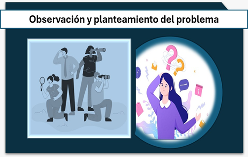

En la observación y planteamiento del problema lo iniciamos con la observación sistemática, que nos permitirá visualizar un fenómeno real, a partir de esta observación se establece específicamente el problema, que se abordará y que en su momento se explicará científicamente. El planteamiento debe ser claro, delimitado y relevante, ya que nos orientará durante todo el proceso posterior.
Se observa que pacientes con diabetes hospitalizados presentan mayor riesgo de complicaciones infecciosas.

¿Qué factores influyen en las complicaciones infecciosas?
Las complicaciones infecciosas en pacientes con diabetes hospitalizados se relacionan principalmente con el mal control de la glucosa, ya que la hiperglucemia debilita las partes fundamentales del cuerpo humano y propicia que se generen microorganismos. También influyen comorbilidades, el daño vascular propio de la enfermedad y el uso de dispositivos invasivos durante la hospitalización, que aumentan el riesgo de infecciones. En conjunto, estos factores explican la mayor susceptibilidad y gravedad de los procesos infecciosos en esta población (Casqueiro y Alves, 2012).